DRE JURÍDICO
Manual Operacional do Sistema & Guia de Controladoria
Plataforma de inteligência financeira, gestão contábil de honorários, apuração estruturada de resultados em 10 grupos CPC e acompanhamento de produtividade para escritórios de advocacia de alta performance.
Visão Geral e Painel Executivo (Cockpit)
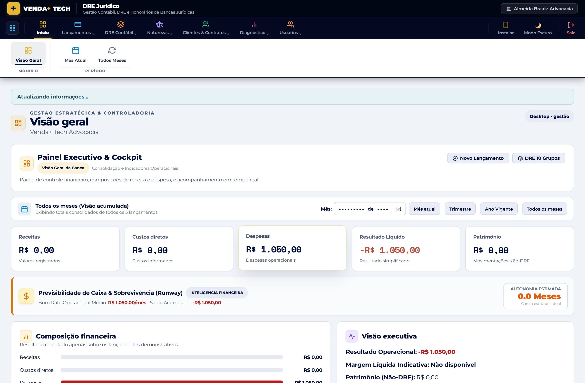
A Visão Geral é a porta de entrada operacional do sistema. Ela consolida todos os lançamentos do período selecionado em receitas de honorários, custos diretos de prestação de serviços, despesas administrativas e operacionais, apuração simplificada de resultado e operações patrimoniais.
O Burn Rate representa a taxa de queima líquida mensal de caixa. O Runway indica quantos meses o escritório sobrevive com o saldo atual antes de zerar suas reservas:
A apuração inicial do Cockpit utiliza a regra de resultado operacional gerencial do Playbook Mestre:
Exemplo visto na tela: R$ 0,00 (Receitas) − R$ 0,00 (Custos Diretos) − R$ 1.050,00 (Despesas) = −R$ 1.050,00.
- Acesso Autorizado: Entre em Início > Visão Geral com suas credenciais de acesso;
- Seleção de Competência: Selecione no campo Mês a competência que deseja revisar;
- Controle de Lançamentos: Leia o contador de lançamentos e compare-o com seu controle físico/financeiro;
- Classificação de Entradas: Confira se todas as receitas foram registradas e classificadas corretamente;
- Auditoria de Saídas: Revise custos diretos e despesas, eliminando omissões ou duplicidades;
- Demonstrativo Detalhado: Verifique o resultado e abra o relatório DRE para examinar a composição dos grupos;
- Previsibilidade (Runway): Confira o saldo utilizado no Runway e compare com os saldos bancários disponíveis;
- Alocação por Área: Analise as áreas jurídicas, observando gastos gerais alocados à área institucional (Escritório);
- Rastreamento Individual: Consulte as movimentações individuais para investigar eventuais divergências;
- Fechamento: Apenas após a conferência documental completa, registre as conclusões do fechamento mensal.
| Sintoma na Tela | Providência Recomendada |
|---|---|
| Receita Zerada | Verificar a competência selecionada e confirmar se os recebimentos do mês foram registrados como receitas de honorários. |
| Despesa Alta | Revisar duplicidade no extrato, verificar a natureza de lançamento e a descrição das movimentações registradas. |
| Resultado Negativo | Verificar a abrangência e integridade dos registros antes de presumir insolvência financeira. |
| Autonomia Zero | Não prova ausência de reserva; conferir saldo bancário efetivo, período ativo e os dados que compõem o Burn Rate. |
| Margem de -100% sem receita | Não usar em comparações: resultado dividido por receita zero é matematicamente indefinido na interface. |
| Dados Não Atualizados | Verificar salvamento recente, filtros ativos de período/texto e registros na tela de extrato. |
Novo Lançamento Financeiro & Extrato
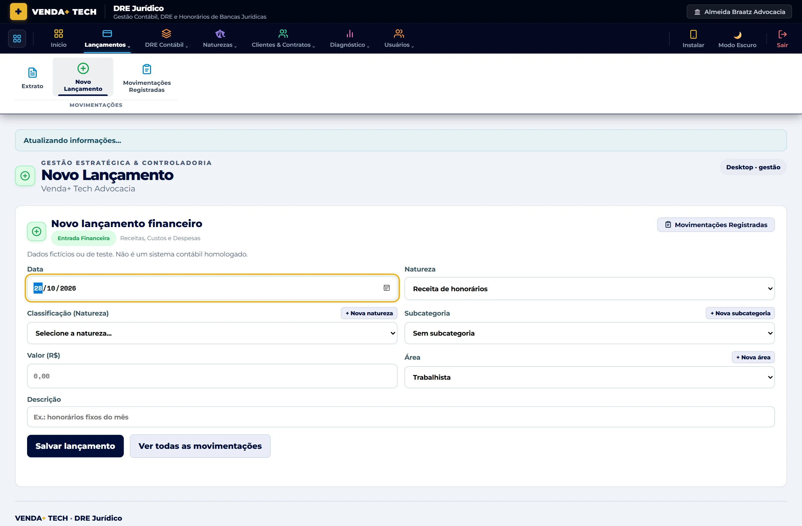
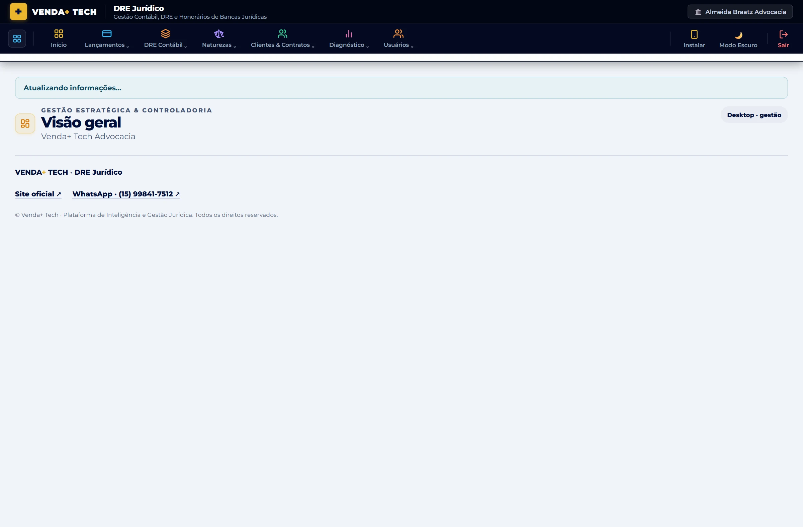
| Campo | Obrigatório? | Função Técnica | Orientação de Uso |
|---|---|---|---|
| Data | Sim | Data do fato financeiro / recebimento | Conferir comprovante ou extrato da conta bancária. |
| Natureza | Sim | Classificação macro do fato | Receita de honorários, Custo direto, Despesa operacional ou Patrimonial. |
| Classificação | Não | Natureza específica no plano de contas | Ex: Honorários Contratuais, Aluguel, Software, Honorários de Êxito. |
| Subcategoria | Não | Detalhamento gerencial de 2º nível | Ex: Filial Centro, Campanha Marketing Digital, Vara Trabalhista. |
| Valor (R$) | Sim | Montante exato da operação | Informar sempre positivo com centavos. O sinal negativo é definido pela Natureza. |
| Área | Sim | Centro de resultado ou especialidade | Ex: Trabalhista, Cível, Tributário, Institucional/Escritório. |
| Descrição | Sim | Histórico auditável para conciliação | Ex: "Honorários contratuais - Parcela 01/03 - Cliente Exemplo". Evitar descrições vagas. |
| Campo | Obrigatório? | Função Operacional e Regras |
|---|---|---|
| Data | Sim | Identifica a data efetiva do fato financeiro. Deve ser confirmada com comprovante, recibo ou extrato bancário. |
| Natureza | Sim | Define a macro-categoria: Receita de honorários, Custo direto, Despesa operacional ou Patrimonial (Não-DRE). |
| Classificação | Não | Identifica a natureza específica vinculada no plano de contas (ex: Honorários Contratuais). Seu uso apura a DRE analítica. |
| Subcategoria | Não | Detalhamento gerencial de segundo nível subordinado à classificação. Pode ser mantido como "Sem subcategoria". |
| Valor (R$) | Sim | Montante monetário maior que zero, digitado sem sinal negativo. Nota técnica: armazenado em centavos inteiros no banco para eliminar erros de arredondamento decimal. |
| Área | Sim | Especialidade jurídica (ex: Trabalhista, Cível) ou centro de custo institucional (Escritório). Evite alterar áreas apenas para balancear resultados. |
| Descrição | Sim | Histórico objetivo e identificável para auditoria futura (de 2 a 130 caracteres). Evite descrições genéricas como "Pagamento" ou "Despesa". |
| Campo | Preenchimento do Exemplo |
|---|---|
| Data | 27/10/2026 |
| Natureza | Receita de honorários |
| Classificação | Honorários Contratuais |
| Subcategoria | Sem subcategoria |
| Valor | R$ 2.500,00 |
| Área | Trabalhista |
| Descrição | Honorários contratuais - Parcela 01/03 - Cliente Exemplo |
- Acesse Lançamentos > Novo Lançamento;
- Confirme a data efetiva do recebimento bancário;
- Selecione Receita de honorários;
- Escolha a classificação apropriada cadastrada;
- Defina a subcategoria, se aplicável;
- Informe o valor exato (R$ 2.500,00);
- Selecione a área de atuação Trabalhista;
- Escreva a descrição identificável da operação;
- Clique em Salvar lançamento apenas uma única vez;
- Abra Movimentações Registradas e confirme a gravação.
| Natureza Informada | Efeito Gerencial Esperado |
|---|---|
| Receita de honorários | Aumenta a Receita Bruta (G01) e o faturamento do período na DRE. |
| Custo direto | Aumenta custos processuais (G03) e reduz a margem bruta da banca. |
| Despesa operacional | Aumenta despesas de G04 a G08 e reduz o lucro operacional (EBIT). |
| Patrimonial (Não-DRE) | Movimentação financeira de caixa segregada, sem afetar o resultado contábil. |
| Situação / Mensagem | Ação Recomendada do Usuário |
|---|---|
| "Atualizando informações..." | Aguardar o término da atualização antes de interpretar os valores. |
| Campos obrigatórios vazios | Preencher Data, Natureza, Valor, Área e Descrição antes de salvar. |
| Valor zero ou inválido | Informar valor monetário positivo com até duas casas decimais. |
| Falha ao salvar lançamento | Ler a mensagem retornada, conferir conexão e verificar extrato antes de repetir. |
- ☑ Data corresponde exatamente ao comprovante bancário;
- ☑ Natureza reflete o tipo real da operação jurídica;
- ☑ Classificação e subcategoria são coerentes com o plano;
- ☑ Valor foi digitado sem divergências ou sinais indevidos;
- ☑ Área jurídica/centro de resultado selecionado corretamente;
- ☑ Descrição identifica o fato registrado de forma auditável;
- ☑ O sistema apresentou confirmação explícita de salvamento;
- ☑ Governança: Não registre valores de clientes ou despesas reembolsáveis como receita própria da banca!
Demonstração do Resultado (DRE 10 Grupos CPC)
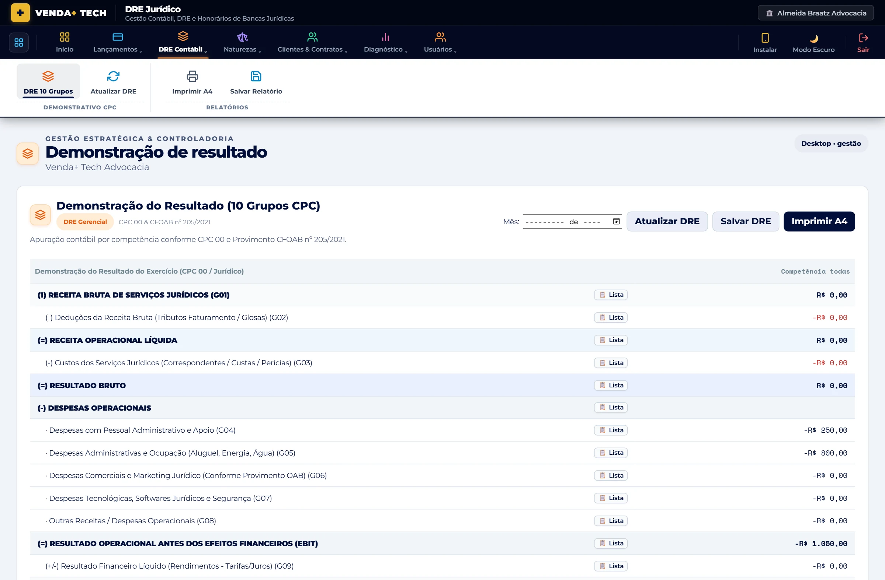
| Grupo / Etapa | Operação | Significado Contábil na Advocacia |
|---|---|---|
| G01 - Receita Bruta de Serviços | (+) Entrada | Total faturado ou recebido em honorários contratuais, êxito, sucumbência e assessoria. |
| G02 - Deduções da Receita | (-) Dedução | Tributos sobre faturamento (Simples Nacional, ISS, PIS/COFINS) e eventuais glosas contratuais. |
| = RECEITA OPERACIONAL LÍQUIDA | (=) Subtotal | Receita líquida real disponível após os impostos sobre notas de honorários emitidas. |
| G03 - Custos dos Serviços Jurídicos | (-) Custo | Correspondentes jurídicos, perícias técnicas da lide, custas de distribuição não reembolsáveis. |
| = RESULTADO BRUTO (MARGEM BRUTA) | (=) Subtotal | Margem da banca após cobrir os custos diretamente ligados aos processos e contratos. |
| G04 - Pessoal Administrativo | (-) Despesa | Salários de secretária, recepcionista, controladoria interna e equipe de suporte. |
| G05 - Administração e Ocupação | (-) Despesa | Aluguel do escritório, condomínio, energia elétrica, água, internet e materiais. |
| G06 - Comercial e Marketing Jurídico | (-) Despesa | Investimento em anúncios online, branding, assessoria e captação ética (Provimento CFOAB 205/2021). |
| G07 - Tecnologia e Softwares | (-) Despesa | Assinatura de softwares de processo, ERPs, IA jurídica, certificados digitais e nuvem. |
| G08 - Outras Despesas Operacionais | (-) Despesa | Demais despesas correntes de manutenção da banca não alocadas nos grupos anteriores. |
| = EBIT (RESULTADO OPERACIONAL) | (=) Resultado | Lucro puramente operacional antes de juros bancários, receitas financeiras e impostos sobre lucro. |
| G09 - Resultado Financeiro Líquido | (+ / -) | Rendimento de aplicações financeiras da banca menos tarifas bancárias e juros pagos. |
| = LAIR | (=) Resultado | Resultado antes da provisão de tributos sobre o lucro. |
| G10 - IRPJ / CSLL sobre o Lucro | (-) Provisão | Tributação sobre o lucro no regime de Lucro Presumido ou Real (quando aplicável). |
| = RESULTADO LÍQUIDO DO EXERCÍCIO | (=) Lucro Final | Lucro ou prejuízo líquido consolidado para distribuição aos sócios ou reserva de lucros. |
Altere os valores abaixo e observe a cascata de cálculo recalculando automaticamente a Receita Líquida, o Resultado Bruto, o EBIT e o Resultado Líquido com as respectivas margens:
| Controle | Como Utilizar / Finalidade |
|---|---|
| Mês | Seleciona a competência mensal a ser analisada. Campo em branco exibe a competência geral consolidada. |
| Atualizar DRE | Solicita ao servidor o recálculo dos saldos acumulados de acordo com os filtros selecionados. |
| Salvar DRE / Salvar Relatório | Aciona a exportação/gravação do fechamento gerencial do período auditado. |
| Imprimir A4 | Gera o fluxo de impressão padronizado para relatório executivo e prestação de contas aos sócios. |
| Lista (em cada linha) | Abre a listagem detalhada de todos os lançamentos individuais que compõem aquele grupo CPC específico. |
| Indicador na Tela | Leitura Correta e Critério de Apuração |
|---|---|
| CAC Comercial (Marketing / G06) | Relaciona o investimento em marketing (Grupo G06) ao número de contratos captados por marketing. |
| CAC Atendimento do Escritório | Relaciona despesas operacionais e overhead de atendimento aos contratos de balcão e indicação. |
| CAC Total Consolidado | Visão unificada das despesas totais (G06 + estrutura) dividida pelo total de novos contratos fechados. |
| Ticket Médio & Volume Fechado | Indicadores comerciais informativos baseados nos valores declarados nos contratos (não receita da DRE). |
| CAC unitário R$ 0,00 com 0 contratos | Não significa aquisição gratuita: sem contratos no denominador, o cálculo é matematicamente indefinido. |
- Selecione a competência do mês a revisar e clique em Atualizar DRE;
- Confira se a receita G01 e as deduções G02 batem com as notas fiscais emitidas;
- Abra o botão Lista nas linhas com valores para auditar os lançamentos;
- Confira os custos diretos G03 e as despesas de G04 a G08;
- Revise receitas/despesas financeiras G09 e tributos sobre o lucro G10;
- Valide o resultado líquido e investigue margens zeradas por falta de receita;
- Nos quadros de CAC, verifique o volume fechado e a origem de cada contrato;
- Após conferência e aprovação interna, salve e arquive o relatório oficial.
| O que aparece | Providência Recomendada |
|---|---|
| Resultado Negativo | Investigar receitas pendentes de faturamento; não presumir automaticamente insolvência. |
| Receita R$ 0,00 | Conferir se houve reconhecimento de receita na competência e se o filtro de mês está correto. |
| CAC R$ 0,00 e 0 contratos | Indicador sem denominador válido. Revisar os cadastros de contratos e canais de captação. |
| Valores divergentes entre Visão Geral e DRE | Conferir recortes de competência, regras de competência contábil vs. caixa e naturezas de lançamento. |
Catálogo de Naturezas & Plano de Contas
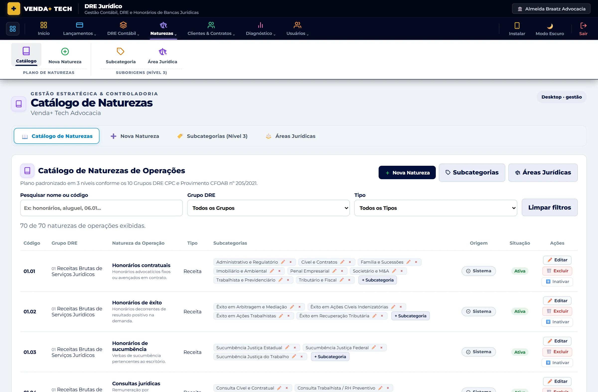
- Abra o Catálogo de Naturezas e observe os filtros ativos;
- Pesquise uma expressão objetiva (ex: "honorários", "software", "marketing");
- Analise o código, o nome e o grupo apresentado antes de escolher;
- Se houver opções parecidas, verifique a finalidade antes de criar uma nova;
- Confirme a natureza correta ao retornar à tela de Novo Lançamento.
- Clique em + Nova Natureza no catálogo ou na tela de lançamentos;
- Informe um nome claro e específico, sem duplicar naturezas existentes;
- Vincule a natureza ao grupo/tipo apropriado (Receita, Custo, Despesa ou Patrimonial);
- Revise a classificação contábil antes de confirmar a gravação;
- Retorne ao catálogo, pesquise o novo item e confirme sua ativação.
| Situação | Procedimento Recomendado |
|---|---|
| Naturezas semelhantes | Pesquise nomes e códigos antes de incluir opções duplicadas no sistema. |
| Item não aparece na lista | Limpe filtros de busca, verifique o termo pesquisado e o vínculo com o grupo macro. |
| Classificação incorreta | Não altere sem avaliar o impacto histórico; valide com o responsável financeiro. |
| Subcategorias excessivas | Padronize termos e evite criar sinônimos que fragmentam relatórios gerenciais. |
- ☑ A existência da natureza foi pesquisada antes de criar outra;
- ☑ O nome é compreensível, padronizado e sem duplicidade;
- ☑ O grupo contábil e o tipo da operação foram conferidos;
- ☑ A subcategoria está vinculada corretamente, quando utilizada;
- ☑ A alteração foi validada para não distorcer lançamentos históricos;
- ☑ O item final está ativo e selecionável nas telas de lançamento.
Clientes, Contratos & Inteligência de CAC
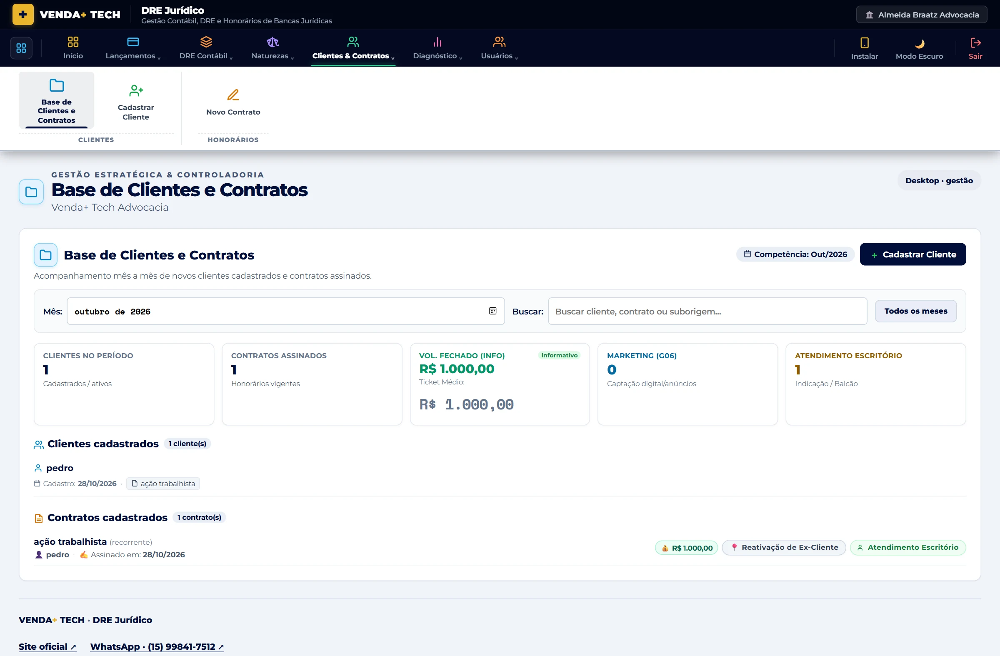
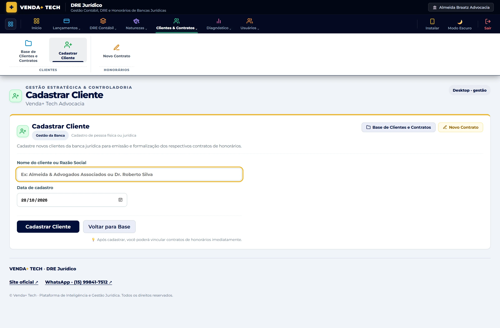
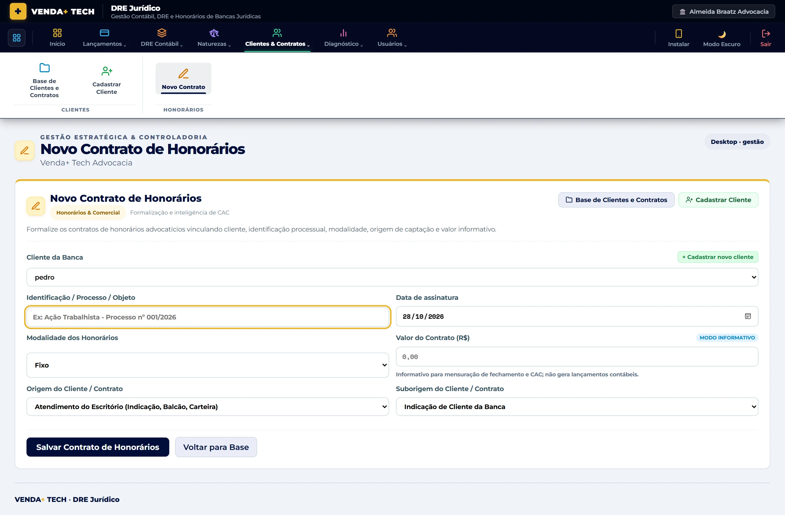
| Indicador na Base | Como Interpretar Operacionalmente |
|---|---|
| Clientes no período | Total de novos clientes cadastrados dentro do recorte mensal selecionado. |
| Contratos assinados | Quantidade de acordos de honorários formalizados e ativos na competência. |
| Volume Fechado (Informativo) | Montante total declarado nos contratos. É dado comercial, não receita contábil da DRE. |
| Ticket Médio | Média contratual por caso: calculado pelo volume fechado dividido pelo total de contratos. |
| Marketing (G06) | Contratos com origem de captação comercial atribuída a anúncios e canais digitais. |
| Atendimento Escritório | Contratos com origem atribuída a balcão, indicação direta ou relacionamento de sócios. |
- Abra Clientes & Contratos > Base de Clientes e Contratos;
- Confirme se está visualizando Todos os meses ou a competência específica;
- Use o campo Buscar para localizar um cliente ou contrato existente;
- Verifique a quantidade de clientes e de contratos assinados;
- Confira a divisão por canal: Marketing (G06) vs. Atendimento Escritório;
- Interprete o Volume Fechado como métrica de pipeline comercial;
- Em caso de novo cliente, acione Cadastrar Cliente primeiro;
- Para novo acordo, abra Novo Contrato e vincule ao cliente cadastrado;
- Retorne à base e valide se os registros constam no painel gerencial.
| Situação | Verificação Orientada |
|---|---|
| Tudo aparece zerado | Remover filtros de mês e texto; confirmar conclusão do cadastro. |
| Cliente não aparece | Revisar termo pesquisado, período do filtro e dados cadastrais. |
| Volume difere do caixa | Confrontar valores contratuais com recebimentos efetivos no extrato. |
| Origem incoerente | Revisar canal do contrato; não alterar dados apenas para inflar métricas. |
Diagnóstico Comercial & Funil de Atendimento
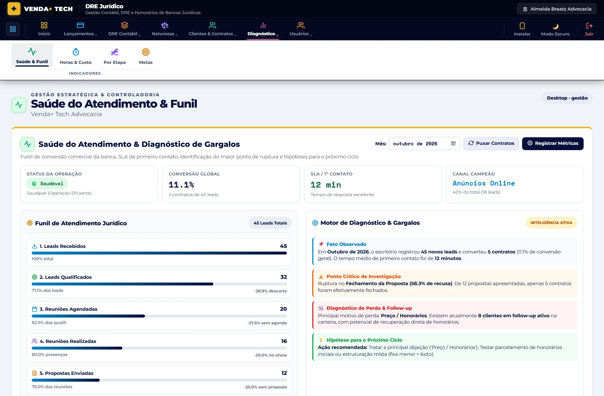
| Etapa do Funil | Volume | Taxa de Conversão | Descarte / Perda | Leitura Operacional |
|---|---|---|---|---|
| 1. Leads Recebidos | 45 | 100,0% | — | Total de oportunidades recebidas na entrada do funil comercial. |
| 2. Leads Qualificados | 32 | 71,1% dos leads | -28,9% descarte | 13 contatos desqualificados por perfil, localização ou viabilidade. |
| 3. Reuniões Agendadas | 20 | 62,5% dos qualificados | -37,5% sem agenda | 12 contatos qualificados que não agendaram sessão de diagnóstico. |
| 4. Reuniões Realizadas | 16 | 80,0% das agendas | -20,0% no-show | 4 clientes faltaram à reunião (taxa de presença de 80%). |
| 5. Propostas Enviadas | 12 | 75,0% das reuniões | -25,0% sem proposta | 4 reuniões que não demandaram envio imediato de proposta formal. |
| 6. Contratos Assinados | 5 | 41,7% das propostas | -58,3% perda (Gargalo) | 7 propostas recusadas. Maior ponto de ruptura do funil! |
O motor de inteligência identificou o Fechamento de Proposta (58,3% de perda) como o gargalo prioritário da banca:
- Diagnóstico de Perda: A objeção de Preço / Honorários é dominante, com 8 clientes em follow-up ativo na carteira;
- SLA de 1º Contato: Média de resposta de 12 minutos (excelente agilidade de atendimento);
- Hipótese para o Próximo Ciclo: Testar parcelamento da entrada de honorários iniciais ou estruturação mista (fixo menor + êxito maior).
| Canal de Origem | Leads | Participação (%) |
|---|---|---|
| Anúncios Online (Google / Meta) | 18 | 40,0% Canal Campeão |
| Indicações / Parceiros | 14 | 31,1% |
| Orgânico / Conteúdo Jurídico | 9 | 20,0% |
| Balcão / Outros | 4 | 8,9% |
| Total Consolidado | 45 | 100,0% |
- Conversão Global: Contratos ÷ Leads × 100 = 5 ÷ 45 × 100 = 11,1%
- Qualificação: Qualificados ÷ Recebidos × 100 = 32 ÷ 45 × 100 = 71,1%
- Comparecimento: Realizadas ÷ Agendadas × 100 = 16 ÷ 20 × 100 = 80,0%
- Fechamento de Propostas: Contratos ÷ Propostas × 100 = 5 ÷ 12 × 100 = 41,7%
- Perda em Propostas: (Propostas − Contratos) ÷ Propostas × 100 = 7 ÷ 12 × 100 = 58,3%
- Reconciliação: Confirme se os 45 leads correspondem a entradas únicas no período;
- Identificação: Separe as propostas em aberto das recusas definitivas de clientes;
- Investigação: Consulte a justificativa dos contatos em follow-up para validar a objeção de preço;
- Experimento: Defina uma condição especial de pagamento para uma amostra controlada;
- Acompanhamento: Na reunião seguinte, meça se a alteração aumentou a taxa de conversão.
Time Studio PWA: Apontamento de Horas & Timesheet
O Time Studio opera como uma aplicação web progressiva (PWA) independente, com interface otimizada para foco total no trabalho jurídico. O advogado alterna entre 3 abas fundamentais para registrar seu esforço:
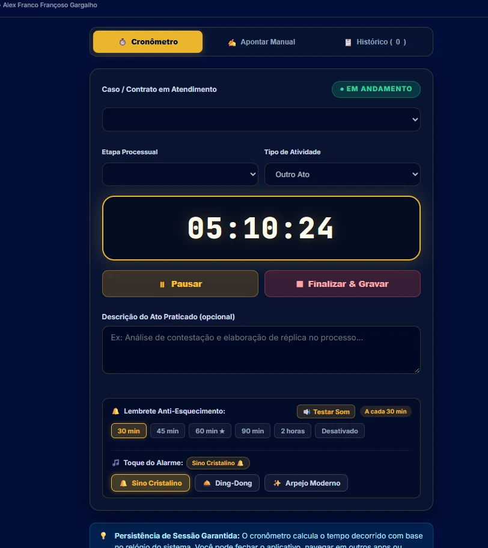
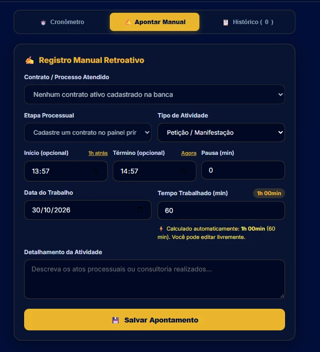
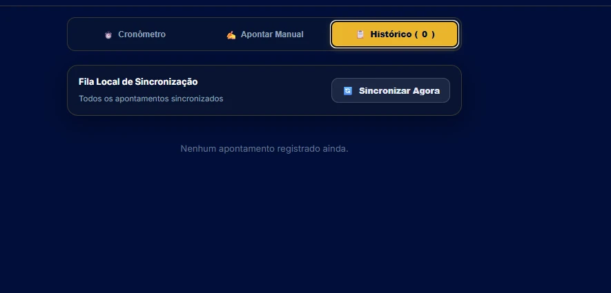
Ao iniciar um atendimento, o advogado clica em Iniciar e o cronômetro entra no estado • EM ANDAMENTO. Para evitar horas fantasmas ou esquecimento ao se ausentar da mesa:
- Alarme Sonoro Configurável: O usuário escolhe o intervalo do lembrete: 30 min, 45 min, 60 min ★, 90 min, 2 horas ou Desativado.
- Toques Acústicos de Alerta: Opções de alerta sonoro de alta distinção: Sino Cristalino 🔔, Ding-Dong 🔔 e Arpejo Moderno ✨, com botão "Testar Som" integrado.
- Alerta na Aba do Navegador: O título da janela pulsa com aviso luminoso (ex:
⏱️ Time Studio - ⚠️ 05:10:32) caso a contagem ultrapasse o tempo usual de foco contínuo. - 💡 Persistência de Sessão Garantida: O cronômetro não depende de loops contínuos de JavaScript. O tempo decorrido é calculado matematicamente confrontando o timestamp de início com o relógio do sistema. O advogado pode fechar a janela, navegar em outros softwares ou reiniciar o computador sem perder o tempo acumulado.
Nem todo ato jurídico ocorre em frente ao computador. Para atos em fóruns, delegacias e reuniões de clientes:
- Preenchimento Ágil com Atalhos: Atalhos de 1 toque preenchem o início ("1h atrás") e o término ("Agora"), além de campo dedicado para deduzir pausas e intervalos não faturáveis.
- Cálculo Automático de Minutos Úteis: O sistema apura instantaneamente o total em minutos e converte para horas e minutos formatados (ex:
60 min = 1h 00min), permitindo ajuste manual fino. - Vínculo Obrigatório de Integridade: Cada apontamento exige o contrato/caso, a etapa processual e o tipo de ato praticado (Petição, Audiência, Diligência, Reunião ou Outro Ato).
- Fila Local & Sincronização em 1 Clique: Arquitetura Offline-First com armazenamento seguro local (IndexedDB/LocalStorage). Em locais sem sinal de internet, os registros ficam guardados na Fila Local e são transmitidos com integridade ao clicar em "Sincronizar Agora".
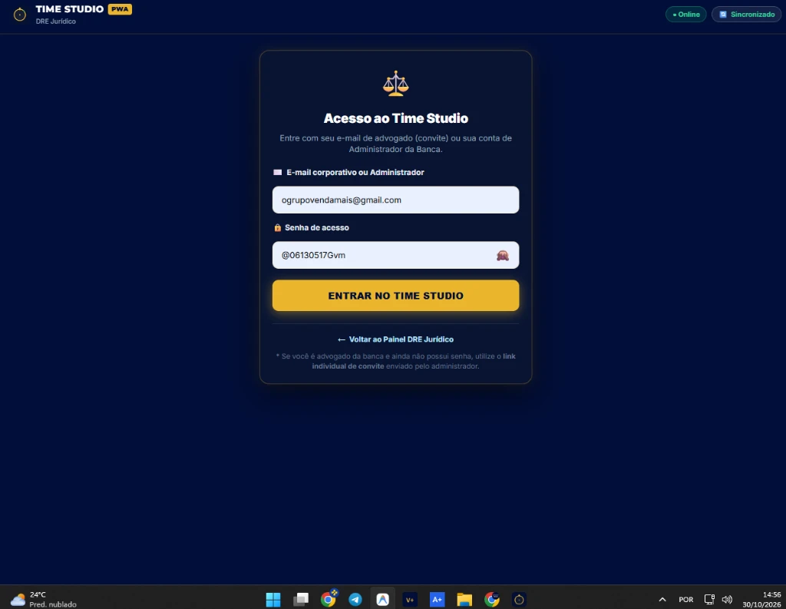
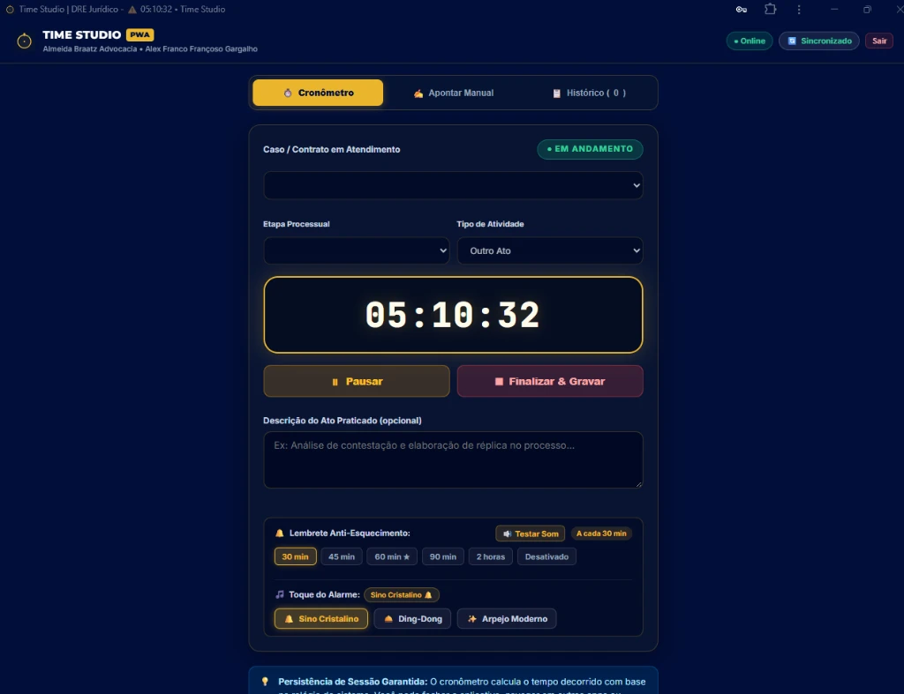
• Online, Sincronizado e botão de saída rápida.
No painel central do DRE Jurídico, o sócio-administrador acessa a aba Produtividade & Horas para:
- Gerar e revogar links individuais de convite para advogados e correspondentes;
- Homologar, aprovar ou rejeitar apontamentos antes da cobrança ou fechamento;
- Acompanhar o valor da hora técnica de cada profissional e o custo total alocado por contrato;
- Abrir a aplicação Time Studio PWA em 1 clique através do botão de atalho dedicado.
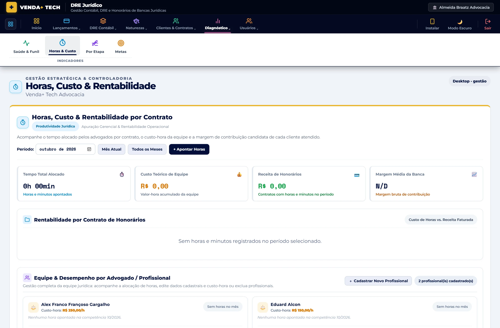
O custo teórico de horas apontadas (ex: 2h x R$ 250/h = R$ 500) serve exclusivamente para apuração de esforço operacional, rentabilidade gerencial e precificação de honorários por contrato. Esse cálculo NÃO deve ser lançado novamente como despesa na DRE Contábil se a remuneração ou pró-labore do advogado já estiver registrado na folha de pagamento do Grupo G04 (Despesas com Pessoal & Pró-Labore).
O Time Studio processa internamente todos os registros em minutos inteiros, garantindo precisão matemática absoluta sem dízimas:
- 15 minutos = 0,25h (despacho curto / contato telefônico);
- 30 minutos = 0,50h (análise de andamento / protocolo);
- 60 minutos = 1,00h (audiência / elaboração de recurso ordinário);
- 90 minutos = 1,50h (redação de inicial complexa / sustentação oral).
Para impedir que o advogado esqueça o cronômetro rodando ao sair da mesa ou atender outro caso, o Time Studio oferece:
- Alerta Sonoro Periódico: Intervalos configuráveis de 30m, 45m, 60m (recomendado ★), 90m ou 2h;
- Toques Personalizados: Sino Cristalino, Ding-Dong ou Arpejo Moderno;
- Persistência de Sessão: O tempo decorrido é calculado pelo relógio do sistema; fechar a janela ou reiniciar a máquina não zera a contagem;
- Fila Local de Sincronização: Apontamentos em locais sem internet (fóruns/audiências) são salvos no dispositivo e sincronizados assim que a conexão retornar.
Análise de Esforço por Etapa Processual
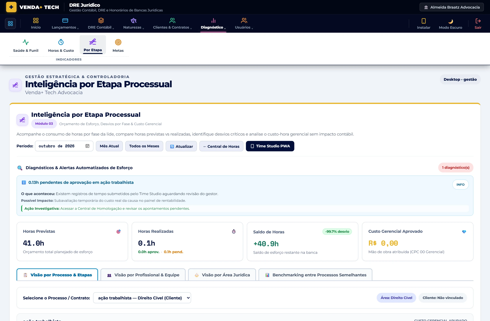
- Fase Postulatória: Elaboração da petição inicial, réplica, contestação e primeiras intervenções judiciais.
- Fase Instrutória: Produção de provas documentais, oitiva de testemunhas, audiências de instrução e perícias técnicas.
- Fase Decisória: Memoriais finais, análise de sentenças de 1º grau e oposição de embargos de declaração.
- Fase Recursal: Apelações, agravos de instrumento, recursos ordinários e tramitação nos Tribunais Superiores (STJ / STF).
- Cumprimento de Sentença / Execução: Cálculos de liquidação, penhoras, impugnações e levantamento dos alvarás de honorários.
Ao cruzar os apontamentos do Time Studio com as etapas processuais cadastradas, o gestor detecta:
- Desvios de Escopo: Processos em que a fase instrutória demandou 300% das horas orçadas sem honorários complementares contratados;
- Padronização de Peças: Identificação de etapas com alto volume de retrabalho que justificam automação ou padronização de teses;
- Precificação Fidedigna: Ajuste do valor cobrado em novos contratos com base no histórico real de horas despendidas em casos análogos.
Multiplica as horas reais trabalhadas pelo custo/hora do profissional alocado.
Valores positivos indicam estouro de orçamento de horas no processo.
Mede a acurácia da precificação de honorários em relação ao trabalho executado.
| Nível do Advogado | Horas Úteis/Mês | Capacidade (Minutos) | Meta Ocupação |
|---|---|---|---|
| Advogado Sênior / Sócio | 140h | 8.400 min | 65% faturável |
| Advogado Pleno | 160h | 9.600 min | 80% faturável |
| Advogado Júnior | 168h | 10.080 min | 85% faturável |
| Estagiário / Paralegal | 120h | 7.200 min | 90% operacional |
| Desvio Identificado | Impacto Financeiro | Providência Gerencial |
|---|---|---|
| Desvio > +30% na Instrução | Erosão da margem de lucro | Elaborar aditivo de honorários para perícias/audiências excedentes. |
| Execução < 50% do orçado | Superestimativa de esforço | Calibrar precificação para tornar propostas futuras mais competitivas. |
| Ocupação > 90% da equipe | Risco de perda de prazos | Contratação de correspondente ou novo advogado associado. |
Metas de Honorários & Planejamento Orçamentário
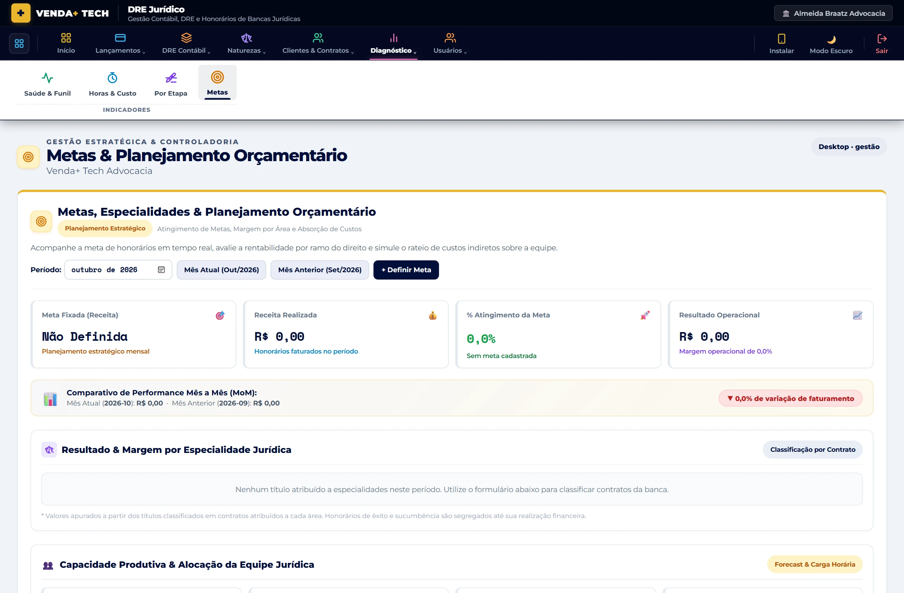
Definição de objetivos de faturamento separados por carteira jurídica (Tributário, Trabalhista, Previdenciário, Empresarial, Cível). Acompanhamento do previsto vs. realizado em cada fechamento mensal.
Metodologia de rateio das despesas administrativas e custos estruturais (aluguel, software, marketing, copa) sobre as áreas geradoras de honorários, apurando a real margem de contribuição de cada equipe.
Monitoramento da taxa de ocupação da equipe técnica (horas faturáveis vs. horas disponíveis no mês). Alerta preventivo quando a equipe ultrapassa 85% de ocupação, indicando necessidade de nova contratação.
O Break-Even financeiro determina o faturamento mínimo mensal necessário para cobrir todos os custos estruturais do escritório:
Custos Fixos: Soma dos grupos G04 (Pessoal adm), G05 (Instalações), G07 (Tecnologia) e G08 (Despesas gerais). Faturamento acima desse valor gera lucro operacional real.
Para precificar processos com precisão, a banca deve incorporar o custo estrutural por hora trabalhada:
Exemplo: R$ 30.000 de despesas fixas rateadas entre 600 horas faturáveis da equipe geram um custo estrutural adicional de R$ 50,00 por hora em cada processo.
| Frequência | Ação de Governança | Responsáveis | Entregável Esperado |
|---|---|---|---|
| Mensal | Confrontar Previsto vs. Realizado por área jurídica e advogado | Controladoria e Sócios | Relatório DRE fechado e apuração de CAC por canal. |
| Trimestral | Recalibrar Break-Even e taxa de Overhead por hora produtiva | Comitê de Gestão | Ajuste da tabela de precificação e metas do trimestre seguinte. |
| Anual | Definição de metas orçamentárias de honorários e distribuição de lucros | Assembleia de Sócios | Orçamento anual aprovado e política de bônus por resultado. |
| Formulário | Campos Principais | Como Preencher / Exemplo | Regra de Governança |
|---|---|---|---|
| 7. Fixar Meta Mensal de Faturamento | Mês de Referência; Meta de Receitas de Honorários (R$) | Ex: Novembro/2026, R$ 50.000,00. Clique em Salvar Meta Mensal e confira o cartão Meta Fixada. | Atenção Uma meta planejada não cria faturamento nem altera o saldo bancário. |
| 8. Classificar Contrato em Especialidade | Contrato de Honorários; Ramo / Especialidade Jurídica | Selecione um contrato cadastrado e vincule à especialidade (ex: Trabalhista, Tributário). Clique em Salvar Classificação. | Finalidade analítica; classificações genéricas prejudicam comparações de margem por área jurídica. |
| 9. Declarar Capacidade Mensal do Profissional | Profissional / Advogado; Minutos Disponíveis no Mês | Informe os minutos úteis: min = horas × 60 (ex: 9.600 min = 160h). Clique em Salvar Capacidade. |
Considere férias, feriados e reuniões internas; não atribua 160h automaticamente a todos. |
| 10. Adicionar Despesa Indireta para Simulação | Descrição do Pool; Valor (R$); Fonte e Justificativa Contábil | Ex: "Software jurídico - estrutura", R$ 3.500,00. Clique em Simular Rateio por Horas. | Controle Dupla Contagem Não some despesas já lançadas na DRE. |
| Situação na Tela | Verificação Sugerida |
|---|---|
| Meta "Não Definida" | Confirme o mês selecionado e salve uma meta monetária positiva para a competência. |
| Receita zero com contratos existentes | Diferencie valor contratado de recebimento efetivo; confira notas e filtros de competência. |
| Capacidade "ND" | Informe os minutos disponíveis do profissional através do formulário de capacidade. |
| Taxa de ocupação zero | Confirme se existem horas apontadas e aprovadas no Time Studio e capacidade declarada. |
| Nenhum resultado por especialidade | Classifique os contratos ativos nas áreas jurídicas correspondentes (Trabalhista, Cível, etc.). |
Governança & Gestão de Perfis de Acesso
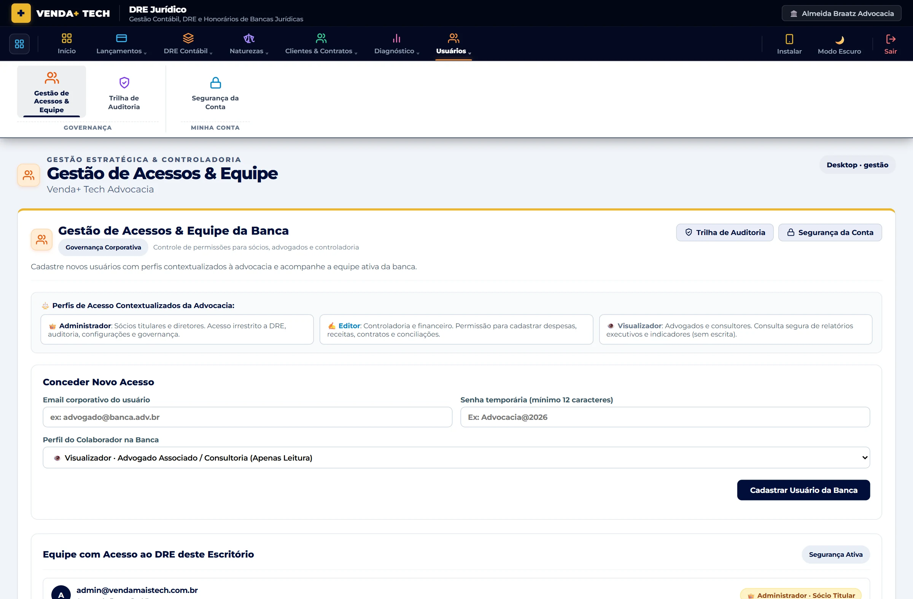
| Perfil | Permissões Concedidas | Público Recomendado |
|---|---|---|
| Administrador | Acesso irrestrito a DRE contábil, auditoria, configurações de equipe, parametrização e governança. | Sócios titulares, administradores e diretoria financeira. |
| Editor | Cadastra e edita despesas, receitas, contratos, apontamentos e conciliações bancárias. | Controladoria, gerentes jurídicos e assistentes financeiros. |
| Visualizador | Apenas consulta de relatórios, dashboards e indicadores executivos (sem permissão de escrita). | Advogados associados, consultores externos e sócios minoritários. |
Necessita de acesso pleno a todos os módulos, fechamentos mensais da DRE, auditoria e gestão de usuários.
Cadastra receitas, despesas, contratos e conciliações bancárias, mas sem acesso à criação de usuários ou trilha técnica.
Utiliza o Time Studio para apontamento de horas técnicas e consulta seus próprios casos e processos, sem acesso à DRE societária.
- Acesse Configurações > Gestão de Usuários & Acessos com perfil de Administrador;
- Clique em + Convidar Novo Usuário;
- Informe o e-mail corporativo individual do advogado ou colaborador;
- Selecione o perfil correspondente (Administrador, Editor ou Visualizador);
- Confirme o envio do convite com link seguro de primeiro acesso;
- O colaborador receberá o link e deverá cadastrar sua senha forte imediatamente.
- Localize o usuário na listagem ativa de colaboradores da banca;
- Alterne o status da conta de Ativo para Inativo / Revogado;
- Acione a opção Encerrar Todas as Sessões Ativas do usuário;
- Os tokens de acesso em todos os dispositivos serão cancelados imediatamente;
- O histórico de apontamentos e lançamentos do usuário é preservado intacto na auditoria.
| Situação Observada | Conferência Recomendada |
|---|---|
| Usuário recém-cadastrado não aparece na lista | Verificar a mensagem de retorno do cadastro e aguardar o término de "Atualizando informações...". Não cadastrar de novo sem antes atualizar a página. |
| Colaborador não consegue editar lançamentos | Conferir se o perfil atribuído é Visualizador. Se a função exigir inserção de receitas/despesas, o administrador deve ajustar para Editor. |
| Advogado associado precisa apenas apontar horas | Utilizar o convite direto para o Time Studio PWA com credenciais próprias de apontamento; não equivale ao perfil Visualizador do DRE. |
| Status "Segurança Ativa" | Indicação de interface que confirma parâmetros básicos; não substitui a auditoria individual de MFA por colaborador. |
Trilha de Auditoria & Rastreabilidade Total (Audit Trail)
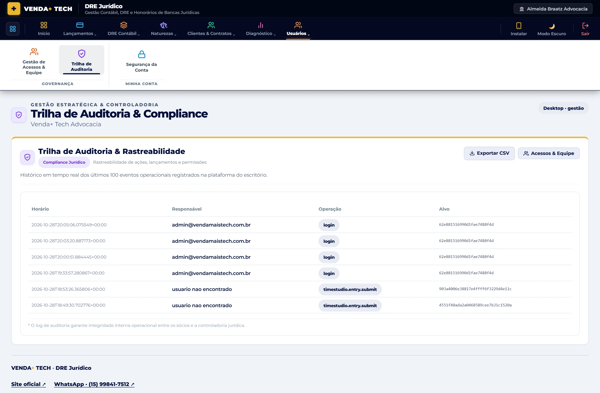
Para garantir validade probatória em litígios e eliminar ambiguidades causadas por fusos locais ou horário de verão, todos os registros da trilha de auditoria são carimbados no formato universal UTC (Coordinated Universal Time / +00:00):
Exemplo prático: Se um evento constar na trilha com o horário 2026-10-30 17:45:00 UTC, a operação foi realizada pontualmente às 14h45min no Horário de Brasília.
| Código do Evento | Quando é Disparado | Dados Gravados no Log | Finalidade de Governança |
|---|---|---|---|
| AUTH_LOGIN | Tentativa de acesso ao sistema (sucesso ou falha de senha/MFA). | E-mail, data/hora UTC, IP de origem, dispositivo e status de sucesso. | Detectar tentativas de invasão, ataques de força bruta e acessos fora de expediente. |
| FINANCIAL_ENTRY_CREATE / UPDATE / DELETE | Inclusão, alteração de valor/natureza ou exclusão de lançamento financeiro. | ID do lançamento, valor anterior, valor novo, natureza e usuário autenticado. | Impedir adulteração fraudulenta de saldos, conciliações e despesas da banca. |
| CONTRACT_CREATE / UPDATE | Formalização de novo contrato de honorários ou edição de valores declarados. | Cliente, número do contrato, volume de honorários contratado e canal de captação. | Assegurar rastreabilidade entre contratos assinados e pipeline de CAC. |
| TIMETRACK_LOG | Gravação de apontamento de horas pelo cronômetro ou lançamento manual. | Advogado, processo/caso atendido, etapa processual e minutagem faturável. | Comprovação documental de horas trabalhadas para prestação de contas a clientes. |
Os administradores podem acionar o botão Exportar CSV / Excel para gerar relatórios de auditoria filtrados por:
- Intervalo de datas específico (ex: fechamento trimestral);
- Usuário específico ou endereço IP sob averiguação;
- Tipo de evento (ex: filtrar apenas exclusões e alterações financeiras).
A trilha de auditoria opera sob o princípio contábil e de segurança da imutabilidade:
- Nenhum usuário — nem mesmo o Sócio Administrador Titular — possui permissão para editar, alterar ou excluir registros da trilha;
- Toda exclusão de lançamento financeiro gera um novo registro de auditoria documentando quem realizou a exclusão e o motivo declarado;
- Garantia irrestrita de conformidade com os artigos 46 e 48 da LGPD (Lei nº 13.709/2018).
| Coluna da Trilha | Como Ler | Cuidados de Governança |
|---|---|---|
| Horário | Timestamp ISO em UTC (+00:00). | Subtrair 3 horas para converter para o horário de Brasília (UTC-3). |
| Responsável | Conta de e-mail ou identificador da ação. | Registros como "usuário não encontrado" indicam convite pendente ou falha de sessão sob averiguação. |
| Operação | Código técnico: login, create, timestudio.invite.create, timestudio.invite.accept. | O código isolado indica a ação, devendo ser contextualizado com o Alvo para análise completa. |
| Alvo | Identificador único (UUID) do objeto afetado. | ID técnico do recurso (lançamento, contrato, convite); não é o nome textual do cliente. |
- Operação "create" genérica: Consultar o ID do Alvo e a trilha complementar para identificar o recurso exato;
- Horário divergente: Checar o fuso UTC (+00:00) vs. horário local e verificar a sincronização do relógio do servidor;
- Poucas linhas visíveis: Utilizar a paginação/rolagem e verificar o alcance dos filtros ativos de data;
- CSV divergente da tela: Confirmar o instante exato da extração e os filtros de escopo aplicados.
- Arquivos CSV contêm e-mails e IPs confidenciais; nunca divulgue em canais abertos;
- Armazene backups de auditoria em diretório criptografado com acesso restrito aos sócios;
- Nunca edite arquivos CSV brutos utilizados como prova documental em investigações internas;
- Mantenha histórico de exportações em conformidade com as diretrizes do Provimento CFOAB.
Segurança da Conta, Timeout de Sessão & Autenticação MFA
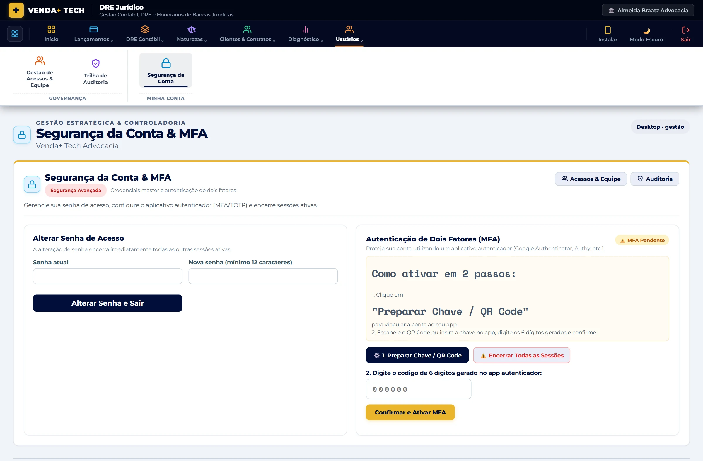
Para preservar o sigilo profissional da advocacia e proteger a banca contra acessos indevidos em estações de trabalho não bloqueadas, o sistema adota uma política estrita de timeout automático de sessão:
Após exatamente 15 minutos sem interação (cliques, digitação ou rolagem), a sessão é suspensa preventivamente e a tela de login seguro é reexibida.
Um banner flutuante avisa 60 segundos antes da expiração. Um único clique no botão "Permanecer Conectado" renova a sessão por mais 15 minutos.
Textos parciais digitados em descrições de lançamentos ou no Time Studio ficam salvos na memória local do navegador, evitando perda de trabalho após reautenticação.
O segundo fator utiliza o protocolo universal TOTP (Time-based One-Time Password), gerando códigos de 6 dígitos temporários:
- Compatível com Google Authenticator, Microsoft Authenticator e 1Password;
- O token é renovado a cada 30 segundos, sem depender de SMS ou e-mail (imune a golpes de clonagem SIM Swap);
- Como ativar: Escaneie o QR Code na tela com a câmera do seu aplicativo e digite o código de 6 dígitos gerado para confirmar o vínculo.
O sistema impõe diretrizes estritas de complexidade criptográfica:
- Comprimento Mínimo: 12 caracteres alfanuméricos;
- Composição Obrigatória: Letras maiúsculas, minúsculas, números e símbolos especiais (ex:
@, #, $, %); - Bloqueio Automático: 5 tentativas incorretas consecutivas bloqueiam temporariamente a conta por 30 minutos;
- Criptografia em Trânsito: Todo tráfego protegido por TLS 1.3 com certificado HTTPS de 256 bits.
Em caso de suspeita de acesso indevido ou quando o usuário esquecer o sistema aberto em computador externo ou de terceiros:
- Acesse Configurações > Segurança & MFA;
- Clique no botão vermelho Encerrar Todas as Sessões;
- Todos os tokens JWT e cookies de autenticação em outros computadores e smartphones são imediatamente revogados;
- Apenas a sessão atual em uso permanece ativa.
Se o advogado perder o smartphone onde estava instalado o aplicativo autenticador TOTP:
- Entre em contato imediatamente com o Sócio Administrador Titular da banca;
- O Administrador acessa a gestão de usuários e aciona o Reset de MFA após verificação biométrica ou presencial;
- O advogado receberá um link temporário exclusivo de uso único para redefinir o acesso;
- No primeiro login após o reset, o cadastro de um novo aplicativo autenticador será compulsoriamente exigido.
O painel de credenciais exige preenchimento rigoroso de segurança:
- Senha Atual: Confirmação da credencial vigente para prevenir alterações por terceiros;
- Nova Senha: Mínimo obrigatório de 12 caracteres alfanuméricos com complexidade;
- Botão "Alterar Senha e Sair": Salva a nova senha e revoga compulsoriamente todas as outras sessões ativas da conta;
- Novo Login Imediato: O usuário deve efetuar login em seguida com a nova senha para validar o acesso.
- Verifique o status na seção Autenticação de Dois Fatores (MFA);
- Clique em 1. Preparar Chave / QR Code para gerar o segredo temporário;
- Abra o app autenticador (Google Authenticator, Microsoft Authenticator) e leia o QR Code;
- Localize no app o código temporário de 6 dígitos do DRE Jurídico;
- Digite o código de 6 dígitos no campo de validação da plataforma;
- Clique em Confirmar e Ativar MFA e valide a mensagem de sucesso exibida.
| Situação / Incidente | Procedimento Operacional Recomendado |
|---|---|
| MFA Não Configurado | Iniciar o preparo da chave, ler o QR Code no app e concluir a confirmação pelo código de 6 dígitos. |
| Código TOTP recusado pelo sistema | Aguardar o próximo ciclo de 30 segundos; conferir se a hora do smartphone está configurada em modo "Automático (Rede)". |
| Senha não aceita no formulário | Revisar a senha atual digitada e verificar se a nova senha atende rigorosamente ao requisito de 12 caracteres. |
| Celular autenticador perdido ou furtado | Acionar imediatamente o Sócio Administrador para reset oficial do MFA após verificação de identidade; não tentar contornos paralelos. |
| Sessão suspeita ou dispositivo esquecido | Alterar a senha imediatamente, clicar em "Encerrar Todas as Sessões", revisar permissões e auditar logs na Trilha de Auditoria. |
- ☑ Cada colaborador da banca possui login corporativo individual e intransferível;
- ☑ Perfis de acesso estão estritamente compatíveis com as funções exercidas (segregação de funções);
- ☑ Senhas são exclusivas, com 12+ caracteres, e gerenciadas com segurança;
- ☑ Segundo fator (MFA) ativo e testado para todos os sócios e operadores financeiros;
- ☑ Política de timeout de 15 minutos ativa para bloqueio automático de tela em inatividade;
- ☑ Apontamentos e descrições do Time Studio protegidos por persistência local de rascunhos;
- ☑ Revogação de acesso e encerramento de sessões executados no mesmo dia em caso de desligamento;
- ☑ Trilha de auditoria consultada regularmente para fiscalização de alterações financeiras;
- ☑ Exportações CSV arquivadas em ambiente protegido, em conformidade com a LGPD;
- ☑ Procedimento formal de contingência estabelecido para caso de perda de smartphone com MFA.

"Vitória Jurídica Começa com Infraestrutura Comercial."
Transformando escritórios de advocacia em máquinas comerciais que vencem — com a mesma precisão, técnica e disciplina com que vencem no tribunal.
Banca Jurídica Titular: Almeida Braatz Advocacia
Sistema: DRE Jurídico — Gestão Contábil, DRE e Honorários de Bancas Jurídicas
Status da Operação: Homologado para Produção · Outubro / 2026
Assinatura do Sócio Administrador